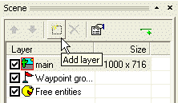
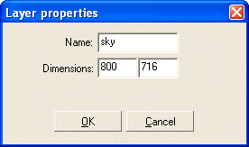
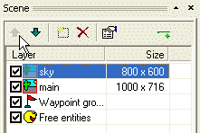
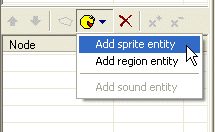
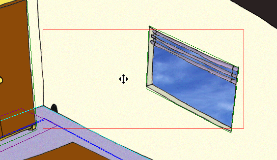

Pøedešlı krok této vıuky byl pomìrnì slo�itı, tak�e si teï odpoèineme u nìèeho jednoduššího. Nauèíme se, jak docílit takzvaného paralaxního skrolování (vícevrstvı posuv scény, kdy se jednotlivé vrstvy posouvají rùznou rychlostí podle vzdálenosti od "kamery"). Pro tento úèel nabízí WME mo�nost mít v jedné scénì více vrstev. Pokud jsou rozmìry vrstvy vìtší, ne� rozlišení hry, vrstva bude automaticky skrolovat. A èím vìtší vrstva je, tím rychleji skroluje. Pokud máme, øeknìme, tøi vrstvy a ka�dá z nich má jiné rozmìry, budou skrolovat ka�dá jinou rychlostí, èím� budou budit dojem perspektivy. Ano, je to takhle jednoduché. Aby bylo dosa�eno realistického dojmu, je nutné, aby nejvìtší vrstvy byly v popøedí a nejmenší byly v pozadí. Další vìc, kterou musíte vìdìt, je, �e ve scénì musí bıt v�dy jedna "hlavní" vrstva a ostatní vrstvy jsou jen pro efekt. Pouze hlavní vrstva mù�e obsahovat regiony a tudí� postavy se pohybují v ní.
Tøi vrstvy jsou obyèejnì dostateèné k dosa�ení dobrıch vısledkù (pozadí, hlavní vrstva, popøedí), ale obecnì není �ádnı limit na poèet vrstev v jedné scénì.
Pøidáme do scény vrstvu s pozadím. Bude to obrázek oblohy, která bude vidìt za oknem.
Nejdøíve potøebujeme nìjakou grafiku pro novou vrstvu. Opìt, obrázek oblohy je pro úèely této vıuky pøipraven v adresáøi "data\tutorial\gfx". V ProjectManu kliknìte pravım tlaèítkem myši na slo�ce "MyScene" a v menu vyberte pøíkaz "Import->Import file" (Import->Import souboru). Nalistujte adresáø "data\tutorial\gfx" a vyberte soubor "sky.bmp". Obrázek oblohy bude naimportován do adresáøe se scénou.
Otevøete soubor "MyScene.scene" ve SceneEditu.
Novou vrstvu pøidáme stisknutím tlaèítka "Add layer" (Pøidat vrstvu) nad seznamem vrstev.

SceneEdit pak otevøe okno s vlastnostmi vrstvy. Zmìòte název na "sky" (obloha) a zmìòte rozmìry (dimensions) na 800x716. To znamená, �e šíøka vrstvy odpovídá rozlišení hry a tudí� vrstva nebude skrolovat horizontálnì. Jeliko� hlavní vrstva je širší a BUDE skrolovat, dostaneme ve vısledku perspektivní efekt. Vıška vrstvy odpovídá vıšce hlavní vrstvy, co� znamená, �e ve vertikálním smìru bude obloha skrolovat stejnì rychle, jako zbytek scény, tak�e bude v�dy vidìt za oknem.

Kliknìte OK pro zavøení okna s vlastnostmi. Musíte nyní posunout vrstvu tak, aby byla první v seznamu (pou�ijte tlaèítka nahoru/dolù).

Poslední, co musíme udìlat, je pøidat do nové vrstvy entitu s obrázkem oblohy. Tlaèítko "Add entity" (Pøidat entitu) u� známe. Stisknìte jej a vyberte v menu polo�ku "Add sprite entity" (Pøidat sprite entitu). Novì vytvoøené entitì zmìòte jméno na "sky" a její sprite nastavte na soubor "sky.bmp", kterı jsme pøed chvílí naimportovali.

Posuòte entitu tak, aby obloha øádnì zakrıvala okno.

A to je vše. Ulo�te scénu a spus�te hru. Mìli byste vidìt paralaxní skrolování v akci.
Vıbornì! Právì jste dokonèili svou první scénu pro Wintermute Engine!!! :-)
Teï se mù�eme pøesunout k poslední kapitole této vıuky, Krok 9: Rùzné tipy a postupy.